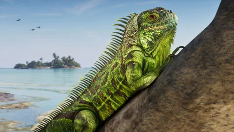
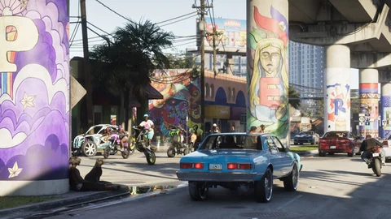

Leonida KeysVer no mapa
Leonida KeysVer no mapaAnimais · GTA VI
Os animais do GTA VI
Jacarés, iguanas, cervos, golfinhos e cachorros: a fauna de Leonida como as imagens oficiais mostram, e as mais de 170 espécies anunciadas pela Rockstar.
Cada ficha separa o que aparece na imagem do que a Rockstar escreveu. Uma espécie reconhecida pelo site ou pelos jogadores ainda precisa ser confirmada, e mostrar um animal não quer dizer que vai dar para caçá-lo. Entender os status.
A fauna em números
Mais de 170 espécies anunciadas
Os números dados por Michael Kane, da Rockstar, na matéria de capa da Game Informer de 29 de setembro de 2026. Ver a fonte
- 170+espécies de animais
- 60+tipos de aves
- 30+mamíferos terrestres
- 7fichas no Leonidakit
As fichas
Sete fichas, cinco famílias
Escolha uma família ou percorra toda a fauna que a Rockstar já mostrou.
 RéptilOficialJacaréA estrela dos pântanos, e não o único predador dos manguezais.GrassriversVer a ficha
RéptilOficialJacaréA estrela dos pântanos, e não o único predador dos manguezais.GrassriversVer a ficha RéptilOficialIguana-verdeUma espécie invasora que toma sol nas Keys.Leonida KeysVer a ficha
RéptilOficialIguana-verdeUma espécie invasora que toma sol nas Keys.Leonida KeysVer a ficha Animal domésticoVisto na mídiaCachorrosDá para fazer carinho neles, e o jogo percebe.Vice CityGrassriversLeonida KeysVer a ficha
Animal domésticoVisto na mídiaCachorrosDá para fazer carinho neles, e o jogo percebe.Vice CityGrassriversLeonida KeysVer a ficha MamíferoVisto na mídiaCervosNo bebedouro de Mount Kalaga, sob o olhar de um puma.Mount Kalaga National ParkVer a ficha
MamíferoVisto na mídiaCervosNo bebedouro de Mount Kalaga, sob o olhar de um puma.Mount Kalaga National ParkVer a ficha MamíferosVisto na mídiaPuma, guaxinim e mamíferos selvagensUm puma à espreita, um guaxinim na lama.Mount Kalaga National ParkGrassriversVer a ficha
MamíferosVisto na mídiaPuma, guaxinim e mamíferos selvagensUm puma à espreita, um guaxinim na lama.Mount Kalaga National ParkGrassriversVer a ficha AvesOficialAves do litoral e dos pântanosPelicanos, flamingos e umas sessenta espécies anunciadas.GrassriversLeonida KeysVice CityVer a ficha
AvesOficialAves do litoral e dos pântanosPelicanos, flamingos e umas sessenta espécies anunciadas.GrassriversLeonida KeysVice CityVer a ficha Animais marinhosOficialFauna marinhaTubarões, baleias e peixes-boi anunciados debaixo da superfície.Leonida KeysVer a ficha
Animais marinhosOficialFauna marinhaTubarões, baleias e peixes-boi anunciados debaixo da superfície.Leonida KeysVer a fichaHabitats
Onde encontrá-los
As regiões ligadas a cada ficha, segundo as imagens e os textos oficiais.


Fontes oficiais
O que a Rockstar mostrou
A Rockstar primeiro mostrou seus animais sem falar deles, depois os contou: mais de 170 espécies.
- Visto na mídia
Trailer 1
Um grupo de golfinhos nada na esteira de um catamarã, por volta de 0:11.

Imagem oficial da Rockstar Games - Oficial
Páginas das regiões
O jacaré vira a atração mais famosa de Grassrivers, e Mount Kalaga, uma área de caça e pesca.

Imagem oficial da Rockstar Games - Visto na mídia
Capturas oficiais
Uma iguana nas Keys, cervos e um puma no norte, jacarés em volta dos aerobarcos.

Imagem oficial da Rockstar Games - Visto na mídia
Extended Look
Jason faz carinho em um cachorro, um ícone de anjo aparece; um chihuahua fantasiado passa na montagem final.

Imagem oficial da Rockstar Games - Oficial
Game Informer
Michael Kane anuncia mais de 170 espécies, incluindo mais de 60 tipos de aves e mais de 30 mamíferos terrestres.
Imagem oficial da Rockstar Games
Uma espécie só ganha nome no site se a Rockstar deu nome a ela; senão, a ficha descreve o que aparece.
Observações dos jogadores
O que a comunidade identificou
Os jogadores examinam cada fundo de cena. O que eles apontam é citado como tal.
Um caderno de animais para completarO GTABase fala de uma lista de animais para marcar, como em Red Dead Redemption 2; a Rockstar só fala de animais para descobrir e rastrear. fonte
Pítons, javalis, cobras venenosasArtigos de fãs os colocam nos pântanos de Grassrivers; nenhuma imagem nem texto da Rockstar os mostra. fonte
O tubarão-branco de BrianUma imagem da apresentação oficial dele, não um animal do jogo; os tubarões são anunciados à parte, sem espécie definida. fonte
Macca the GatorO mascote de TV da linha Goodtime Gear da edição Ultimate: um personagem, não um jacaré do jogo. fonte
As espécies reconhecidas pela silhueta, como o colhereiro ou o lince-vermelho, ainda precisam ser confirmadas nas fichas delas.
Perguntas em aberto
O que ainda falta confirmar
A lista de espécies é longa; o que o jogo faz com elas ainda está por descobrir.
Quais animais dá para caçar
A caça foi anunciada em Mount Kalaga, sem lista de animais de caça.
Um animal de estimação
Fazer carinho em um cachorro, sim; adotar um, nada foi dito.
Raros e lendários
Animais para rastrear foram anunciados, sem lista nem recompensa.
Peixes-boi, sapos-cururus, macacos-rhesus
Nomeados pela Rockstar, nunca mostrados.
Os predadores
O texto de Grassrivers promete alguns mais perigosos que o jacaré, sem dizer quais.
Cada resposta vai entrar na ficha da espécie, com a fonte, assim que for publicada.
Ferramentas do site
O que muda para você
Enquanto o jogo não chega, descubra as regiões mais selvagens e planeje suas saídas.
MapaOnde encontrar a faunaOs pântanos de Grassrivers, as florestas de Mount Kalaga e os recifes das Keys.AbrirCalculadoraA caça vale a pena?Ela rende dinheiro, segundo Rob Nelson, mas sem valor divulgado: escreva quanto uma caçada renderia para você e compare com suas outras atividades.AbrirRegiãoGrassriversOs pântanos dos jacarés, dos aerobarcos e dos caçadores.AbrirColecionáveisA pesca e seus desafiosA família “Fauna e pesca” do caderno, e o que se sabe sobre seus colecionáveis.Abrir
As fichas de animais vão ser completadas com o jogo, sem inventar nada até lá.
Perguntas
Perguntas frequentes
As perguntas que as pessoas digitam num buscador, com respostas curtas e datadas.
Quais animais tem no GTA 6?
Mais de 170 espécies, segundo Michael Kane, da Rockstar, na matéria de capa da Game Informer: mais de 60 tipos de aves, mais de 30 mamíferos terrestres, peixes e répteis. Ele cita os peixes-boi, flamingos, pelicanos e jacarés, e espécies invasoras como a iguana-verde, o sapo-cururu, o gato feral e o macaco-rhesus. As imagens oficiais já mostram jacarés, iguanas, cervos, um puma, cachorros, golfinhos e aves.
Tem jacaré no GTA 6?
Sim. A Rockstar faz deles a atração mais famosa de Grassrivers, os pântanos de Leonida, e as capturas oficiais mostram alguns nadando ao redor dos aerobarcos. O mesmo texto avisa que predadores bem mais perigosos vivem nos manguezais, sem dizer quais. Nada foi publicado sobre ataques nem sobre caça ao jacaré.
Quais animais dá para caçar no GTA 6?
A Rockstar não disse. Mount Kalaga é apresentado como área de caça, e Rob Nelson, citado pelo criador TGG, explica que caçar rende dinheiro. As capturas mostram caçadores armados na floresta e, em Grassrivers, um jacaré e um felino trazidos para o píer. Nenhuma espécie está confirmada como caça.
Dá para ter um cachorro no GTA 6?
Nada indica isso. No Extended Look, Jason faz carinho em um cachorro que encontra em um prédio e um ícone de anjo aparece; as reportagens também falam em repreendê-lo ou observá-lo. Nenhum animal de estimação para adotar ou manter no esconderijo foi anunciado.
Tem tubarões e animais marinhos?
Sim, segundo Michael Kane: várias espécies de tubarões, baleias, arraias, tartarugas e águas-vivas, cada uma com seu jeito de se mover, além dos peixes-boi. As imagens já mostram golfinhos no Trailer 1 e uma tartaruga-marinha no meio de peixes de recife nas Keys.
14 fontes consultadas
Fontes e status
Cada afirmação desta página tem um status e uma fonte datada. As páginas novas foram conferidas em 4 de outubro de 2026 por meio de um buscador, porque abri-las diretamente estava bloqueado a partir do nosso ambiente de trabalho naquele dia; as páginas que o site já citava mantêm a data.
Oficial
Página ou vídeo publicado pela Rockstar (site de GTA VI, Newswire, trailers, Extended Look), ou declarações de um responsável da Rockstar relatadas por um veículo de imprensa identificado, com a data.
Visto na mídia
O que uma imagem ou sequência oficial mostra, sem um texto da Rockstar que diga isso: um plano de trailer, uma captura, um momento do Extended Look, com o minuto exato quando é conhecido.
Identificação da comunidade
Comparação feita por jogadores, por uma wiki ou por um site de fãs (lugar real, ator, condado). Citada como tal, nunca apresentada como confirmada.
A confirmar
Pergunta sem resposta publicada: preço, compra, acesso, papel na história. Anotamos a pergunta para não adivinhar a resposta.
Páginas consultadas
- OficialRockstar Games: página oficial de Grassrivers
O jacaré, a atração mais famosa dos pântanos, e predadores bem mais perigosos nos manguezais.
- OficialRockstar Games: página oficial de Mount Kalaga National Park
Um parque apresentado como área de caça de primeira, com pesca e trilhas off-road.
- OficialSite oficial de Grand Theft Auto VI (páginas “Only in Leonida”, edições, pré-vendas)
Seis regiões e oito personagens apresentados em 6 de maio de 2025; textos das edições de 24 de junho de 2026. Relido em 27/09/2026 nas páginas que o citam (rockstargames.com inacessível do nosso estúdio naquele dia).
- OficialRockstar Games: capturas oficiais de GTA VI
Capturas das regiões e dos personagens (maio de 2025) e das edições (junho de 2026); os estabelecimentos nomeados nos títulos das capturas.
- OficialRockstar Games: vídeos oficiais de GTA VI (Trailer 1, Trailer 2, An Extended Look)
Trailer 1 de 4 de dezembro de 2023, Trailer 2 de 6 de maio de 2025, Extended Look de 27 de agosto de 2026: os quadros do site vêm deles.
- OficialRockstar Newswire: Grand Theft Auto VI, An Extended Look
Apresentação de 26 minutos capturada no PS5.
- OficialMicrosoft Store: Grand Theft Auto VI, Ultimate Edition (ficha oficial da edição)
“PTT YOUNGIN$ COMPOUND”: saquear este esconderijo de gangue e fugir sem problemas com itens especiais e um contrabando exclusivo.
- OficialInsider Gaming: mais de 170 espécies animais no GTA 6
Retoma a matéria de capa da Game Informer: Michael Kane, da Rockstar, anuncia mais de 170 espécies, incluindo mais de 60 aves e mais de 30 mamíferos terrestres, e cita peixes-boi, flamingos, pelicanos, jacarés e espécies invasoras.
- OficialBeebom: um ecossistema com mais de 170 espécies
O mesmo anúncio: espécies nativas e invasoras, tubarões, baleias, arraias, tartarugas e águas-vivas, cada uma com seus próprios movimentos.
- OficialGameSpot: a pesca e a caça não funcionam como você imagina
Falas atribuídas a Rob Nelson: o que se pesca é solto, caçar rende dinheiro.
- Visto na mídiaTheWrap: tudo o que o Extended Look mostra
Jason faz carinho em um cachorro no prédio da abertura, e um ícone de anjo aparece.
- Visto na mídiaEngadget: breaking down the GTA 6 extended look
O apartamento, Jason diante da TV, Real Dimez na cabine de gravação.
- Identificação da comunidadeGTABase: lista dos animais do GTA 6
Lista de fãs; fala de uma lista de animais para marcar, sem fonte oficial.
- Identificação da comunidadeGTA Intel: Grassrivers, os pântanos estilo Everglades
Cita o texto oficial da região e acrescenta espécies que a Rockstar não mostrou.
O que não fazemos. Nenhum dado vindo dos vazamentos de 2022 ou de 2026, nenhum preço inventado, nenhuma comparação apresentada como confirmada. Os status são explicados no Tutorial.
Continue explorando


A calculadora
A caça rende mais que uma missão?
A Rockstar diz que a caça rende dinheiro, sem dar nenhum valor. Escreva quanto uma caçada renderia para você e a duração: a calculadora a compara com suas outras atividades, por hora de jogo.
E depois?
O resto será escrito em 19 de novembro de 2026.
Cada ficha será completada com o jogo: o que se encontra lá, o que se faz lá, quanto rende. Nada inventado até lá.